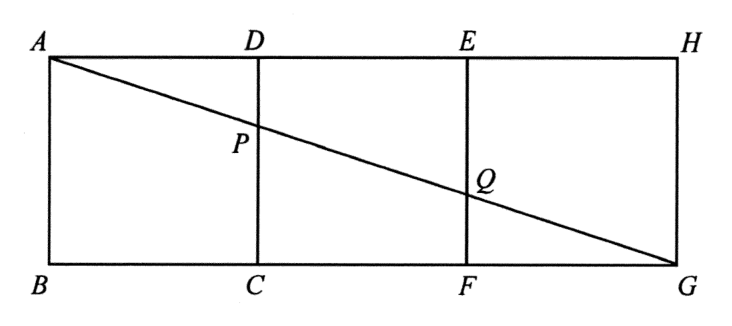

Topic 10 · Mensuration — areas of similar triangles inside three squares
In the figure, ABCD, CDEF and EFGH are squares. AG cuts CD and EF at P and Q respectively. Find the ratio of the area of quadrilateral DEQP to the area of quadrilateral ABCP.

Since $ABCD$, $CDEF$, $EFGH$ are squares and share edges $CD$ and $EF$, all three squares have a common baseline $BG$ with $$A,\;D,\;E,\;H\ \text{on one horizontal line},\qquad B,\;C,\;F,\;G\ \text{on the other.}$$
Let $AB=3$ (so $CD=3$), $CF=2$, $FG=1$. (The actual numbers may be scaled; the ratio is unchanged.) Then $$BG=AB=3,\qquad CG=CF+FG=2+1=3,\qquad FG=1 .$$ Hence the horizontal distances from $G$ are in the ratio $$BG:CG:FG=3:2:1 .$$
$A$, $P$, $Q$, $G$ lie on one straight line (the transversal $AG$), and $AB \parallel PC \parallel QF$ (all perpendicular to $BG$, since they are sides of the squares). Therefore, by the AA / AAA similarity test:
$$\angle AGB=\angle PGC=\angle QGF \quad(\text{common angle at }G)$$ $$\angle ABG=\angle PCG=\angle QFG=90^\circ$$
$$\therefore\ \triangle ABG \sim \triangle PCG \sim \triangle QFG \qquad (\text{AAA})$$
Corresponding sides give $$AB:PC:QF \;=\; BG:CG:FG \;=\; 3:2:1 .$$
With $AB:PC:QF=3:2:1$, the areas of the three similar triangles are in the ratio
$$\text{Area}(\triangle ABG):\text{Area}(\triangle PCG):\text{Area}(\triangle QFG)=3^2:2^2:1^2=9:4:1 .$$
Taking convenient units, write $$\text{Area}(\triangle ABG)=9k,\quad \text{Area}(\triangle PCG)=4k,\quad \text{Area}(\triangle QFG)=1k .$$
$ABCP$ is the region of $\triangle ABG$ left after removing $\triangle PCG$, so
$$\text{Area}(ABCP)=\text{Area}(\triangle ABG)-\text{Area}(\triangle PCG)=9k-4k=5k .$$
Also, $FCPQ$ is $\triangle PCG$ minus $\triangle QFG$:
$$\text{Area}(FCPQ)=4k-1k=3k .$$ $$\therefore\ \frac{\text{Area}(FCPQ)}{\text{Area}(ABCP)}=\frac{3k}{5k}=\frac{3}{5}.$$
Both quadrilaterals are parallelograms: $FCPQ$ has $PC\parallel QF$ and $CF\parallel PQ$ ; $DEQP$ has $DE\parallel PQ$ (along the top) and $DP\parallel QE$ (along the verticals).
Translating by the vector $\overrightarrow{FE}$ (i.e. shifting one square to the left) sends $$F\to E,\qquad C\to D,\qquad P\to P,\qquad Q\to Q .$$ Hence $FCPQ$ maps exactly onto $DEQP$, so the two quadrilaterals are congruent and have equal areas:
$$\text{Area}(DEQP)=\text{Area}(FCPQ)=3k .$$
$$\frac{\text{Area}(DEQP)}{\text{Area}(ABCP)}=\frac{\text{Area}(FCPQ)}{\text{Area}(ABCP)}=\frac{3k}{5k}=\frac{3}{5}.$$
So the required ratio is
$$\boxed{\;\text{Area}(DEQP):\text{Area}(ABCP)=3:5\;}$$
This matches option C.
$AB:PC:QF=3:2:1 \Rightarrow$ areas $9:4:1$; then $DEQP\cong FCPQ$ so the ratio is $(4-1):(9-4)=3:5$.
Question. In the figure, \(AB\parallel PC\parallel QF\) and \(A\), \(P\), \(Q\), \(G\) lie on a straight line, with \(AB:PC:QF=4:2:1\). Given that \(FCPQ\) and \(DEQP\) are congruent, find \(\text{Area}(DEQP):\text{Area}(ABCP)\). A. \(1:3\) B. \(1:4\) C. \(2:5\) D. \(3:4\) [1 mark]